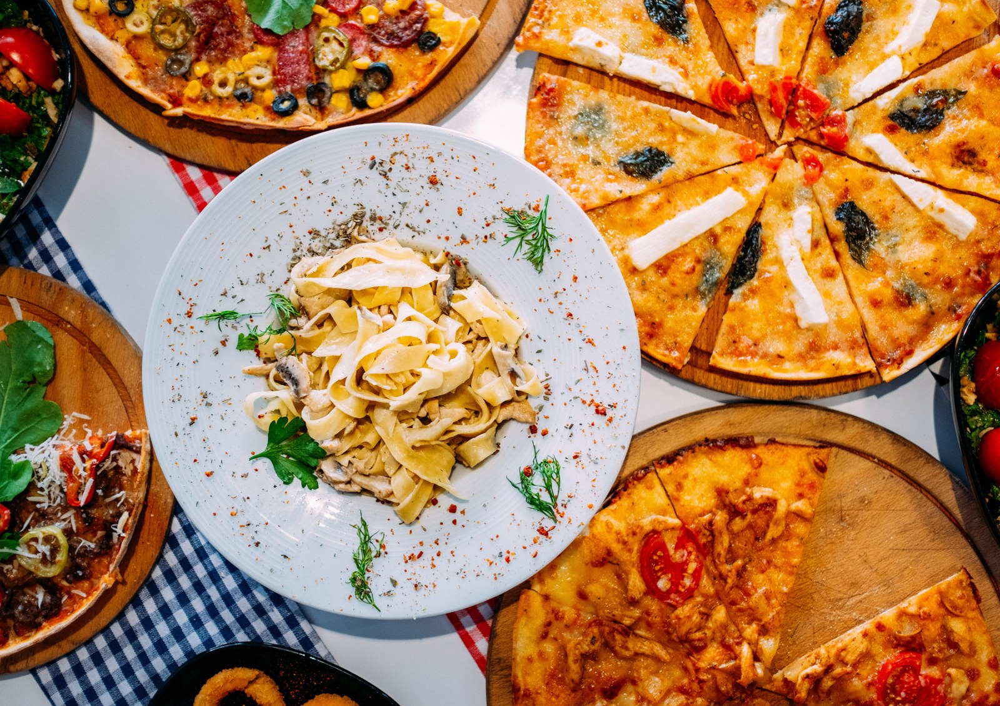
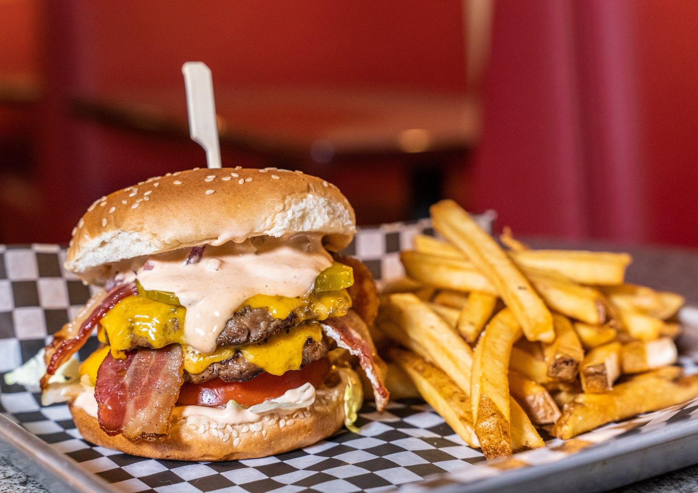
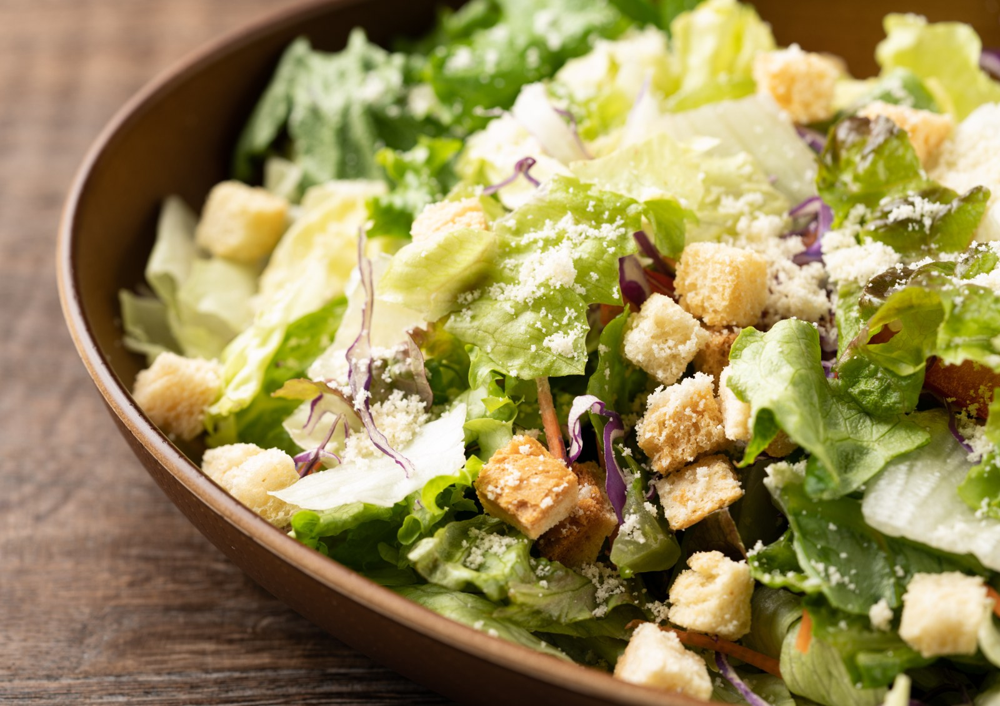
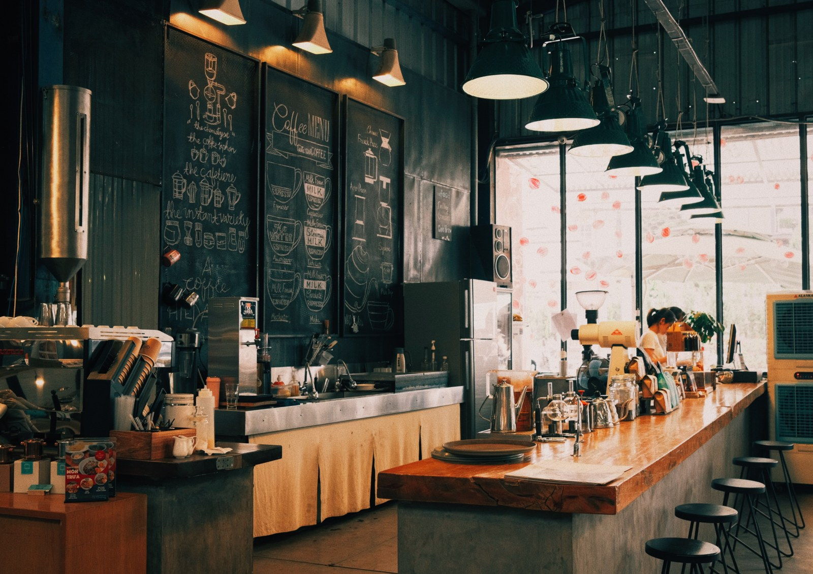

What sounds good?
Search a restaurant name or cuisine. Narrow it down by borough and see what turns up.
THE NEW YORK RESTAURANT DIRECTORY
A little curiosity.
A whole city to explore.



From your usual order to something new.
Browse restaurant records across New York City.
YOUR LITTLE GUIDE TO THE COLLECTION
Search a restaurant name or cuisine. Narrow it down by borough and see what turns up.
Browse addresses, inspection grades, and scores before moving to the next find.
Add a restaurant, edit its details, or manage the records already in your collection.
THE RESTAURANT DIRECTORY / NEW YORK CITY
Find a familiar favorite or discover something different.
Grade and score filters match the same inspection in a restaurant’s history. Cards display the latest dated inspection.
{{ countText }}
One card per restaurant{{ r.borough || 'Unspecified borough' }}
{{ addressText(r) }}
{{ dateText(r) }}
A CLOSER LOOK AT THE DATA
Compare recorded inspection scores across the collection.
{{ reportNote }}
| Rank | Restaurant | Cuisine | Borough | {{ report === 'best' ? 'Average score' : 'Total score' }} | Inspections |
|---|---|---|---|---|---|
| {{ i + 1 }} | {{ r.name }} | {{ r.cuisine }} | {{ r.borough }} | {{ rankScore(r) }} | {{ r.inspectionCount }} |
| No scored inspections match this report. | |||||
Based on available numeric inspection scores. This is not a customer-review or star-rating system.
ABOUT THE PROJECT
MunchQuest helps you browse and manage restaurant records in one place.
Search by name or cuisine, filter inspections, and compare restaurant records across New York City’s five boroughs. Restaurant details and inspection history come from the connected database.
This student project demonstrates database queries, aggregation, and adding, editing, and deleting restaurant records.
Images marked “Illustrative photo” show food or a general restaurant setting, not the named establishment. Historical inspection records do not guarantee a restaurant’s current condition.

The browser requests records and displays the results.
API routes validate requests and communicate with MongoDB.
Restaurant documents are stored locally or in MongoDB Atlas, depending on setup.